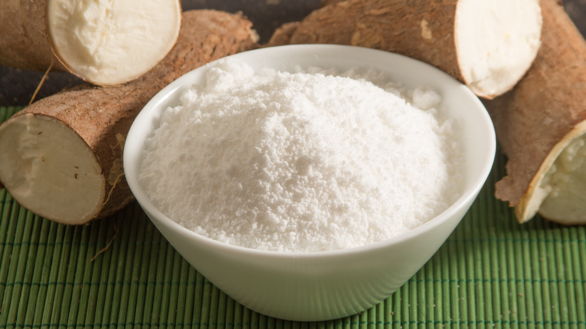
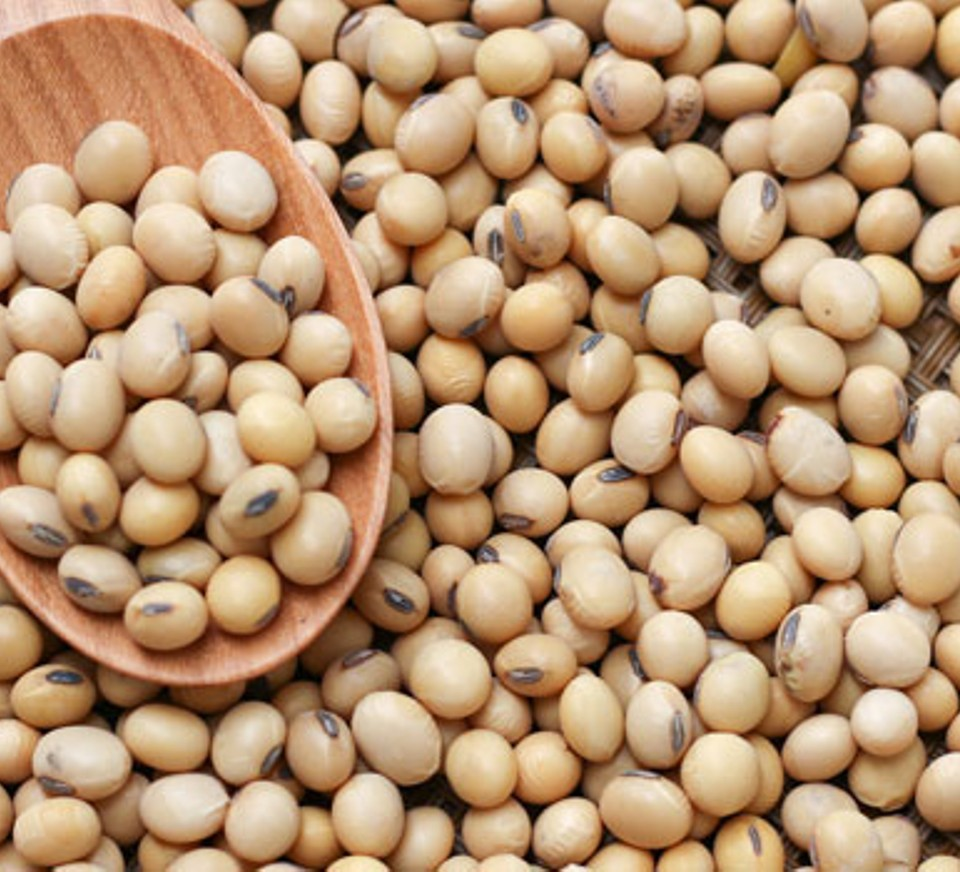
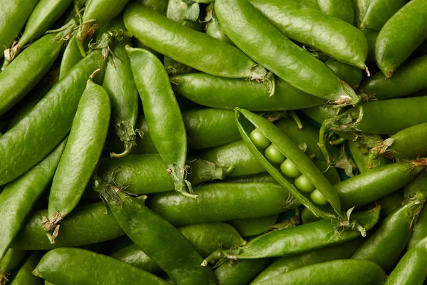

FARM : Crop Production

Sweet potato & Soya porridge
Nutritious and tasty porridge made from locally grown sweet potatoes and soya beans.

Cassava flour
High-quality cassava flour, perfect for cooking and baking — finely processed and hygienically packaged

Grading, polishing & packaging
Modern systems for sorting, polishing, and packaging products for local and export markets.

Soya beans
Premium soya beans for food, feed, and industrial use — carefully processed and packaged.
Groundnuts & Nsinjiro
High-quality groundnuts and Nsinjiro packaging that attract both local and export buyers.

Nandolo (Pigeon peas)
Clean and well-graded Nandolo, rich in protein and ready for market distribution.

Beans
Fresh, colorful, and nutritious beans sourced from our trusted partner farmers.

Mzama
Top-quality Mzama, organically grown and packaged for freshness.